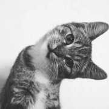
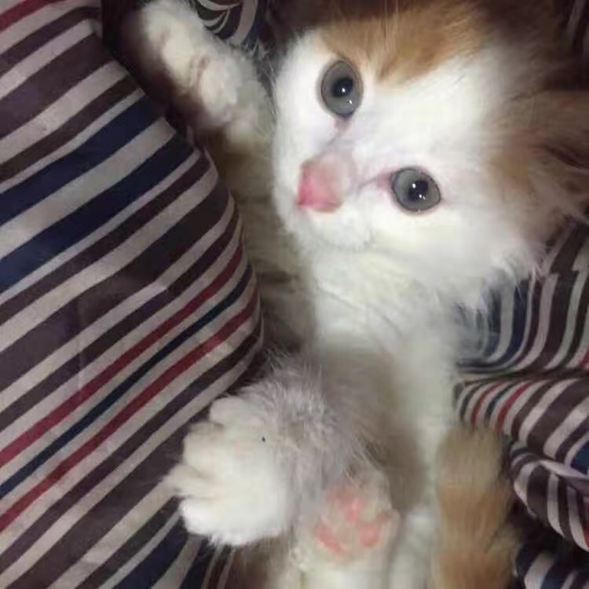

名字:
白糖
性别:女

介绍:没有糖
问题
答案
新建于:2017-04-27 03:29:12 PM，更新于2017-04-27 03:30:34 PM
Pre上一页
Next下一页
跳页:
正文: 谢邀
我家猫是我老公的姐姐买的，我其实巨害怕猫！！
我一直觉得猫喜怒无常，不亲近人，会咬人，抓人，，是个巨恐怖的存在！！我到现在也害怕猫，，除了我家团团
但是他回来之后特别亲我不知道为什么？？我快吓哭了好吗，根本经受不住他的热情！
他老是半夜偷偷从姐姐房间溜出来上我床，我一翻身一个毛茸茸的东西，，直接跳起来了！！
后来依靠他的毅力以及厚脸皮终于让我接受了他
我开始愿意在姐姐抱住他的时候摸摸他
也开始慢慢承认他像个修车工人一样从沙发底下滑出来的样子还蛮可爱的
直到姐姐走了之后我才成为一个真正的铲屎官
我一直觉得他有点变异，因为我以前室友的猫非常的高冷，也不理人不粘人，不许别人直视他，，非常之霸气，，我觉得这才是猫啊，，高冷霸气，，可能因为从小没接触过猫是跟我家狗一块长大的，，所以性格大概半猫半狗？？
他像狗一样回家会迎接我，，两个月就知道自己名字，一叫就会回应，，能分辨出来该讨好谁谁不喜欢他，，，特别粘人，，喜欢挨着我睡，，睡在我头上，，我都能听懂他叫声所表达的情绪，，焦躁，生气，着急，开心，示弱，撒娇，，，我们两个可以这样聊半个小时，，。
最后劝告大家，年纪轻轻千万不要碰猫啊，，，一日撸猫，终身难戒啊！！每天不想出门，不想工作，，只想撸猫！整个人都废了！！

Pre上一页
Next下一页
跳页: